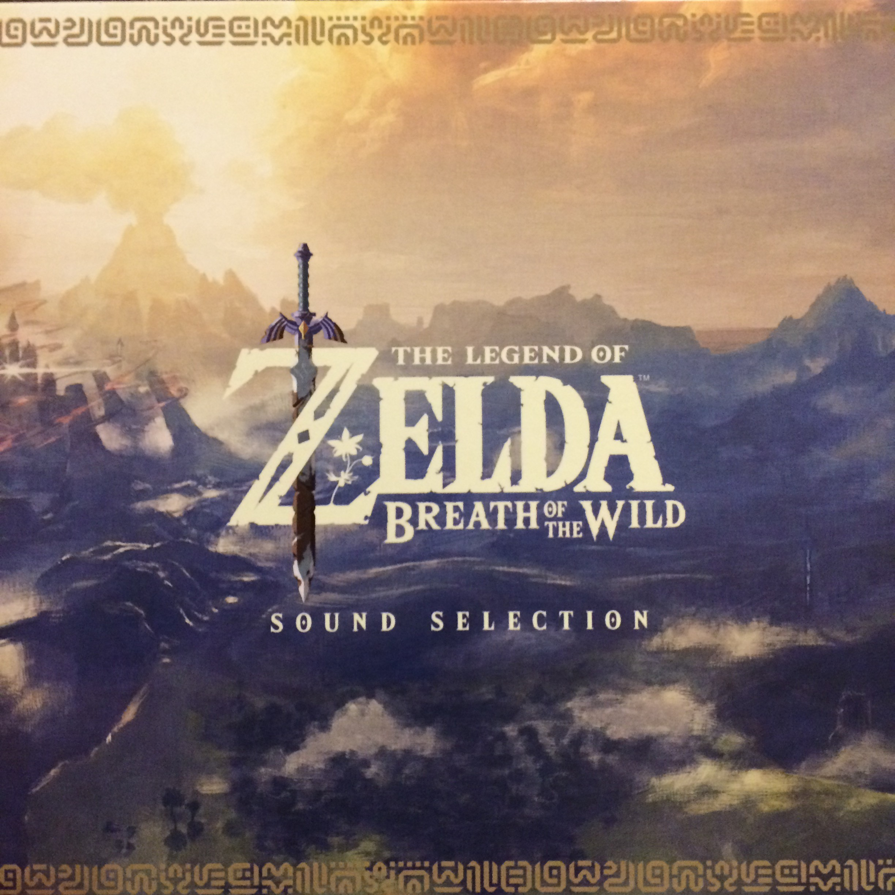
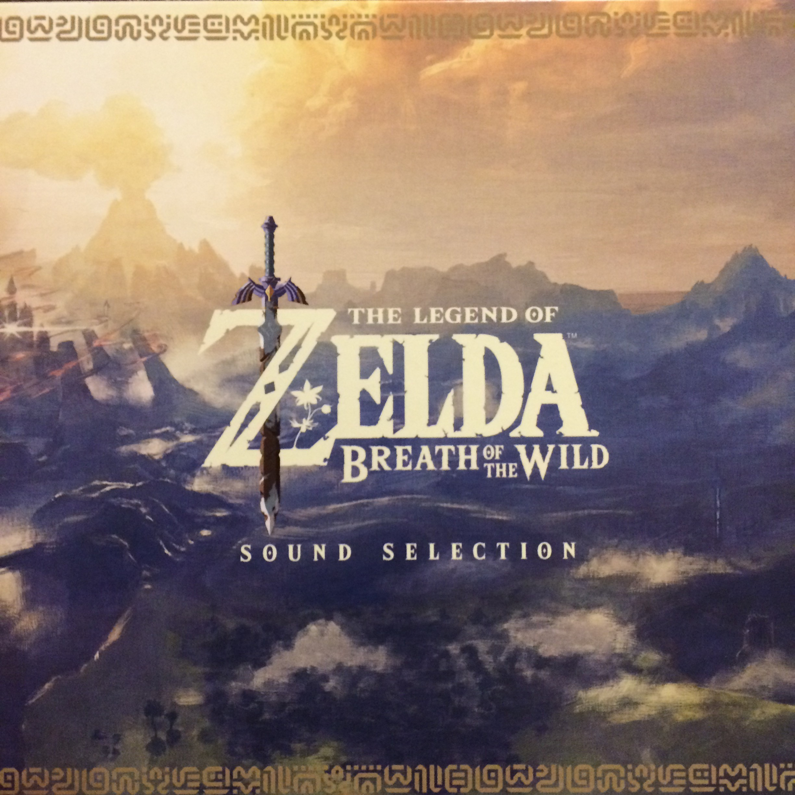

Day 21

片岡 真央 - Dragon Theme
晚上的时候，听着这首曲子，看着龙伴随着点点星光从水中 不急不徐的飞出来。我真的感到宁静和祥和，并且发自内心的对这个生物感到崇敬。如果真的有龙的话，一定是这样的吧。我止不住想像千百年前的祖先第一次看到如此强大和美好的存在，把它作为部落的图腾的场景。

片岡 真央 - Dragon Theme
晚上的时候，听着这首曲子，看着龙伴随着点点星光从水中 不急不徐的飞出来。我真的感到宁静和祥和，并且发自内心的对这个生物感到崇敬。如果真的有龙的话，一定是这样的吧。我止不住想像千百年前的祖先第一次看到如此强大和美好的存在，把它作为部落的图腾的场景。
First Published on 2019-02-20 Wed 23:20
Last modified on 2020-09-13 Sun 13:07
Send your comment to archive.casouri.cat@gmail.com